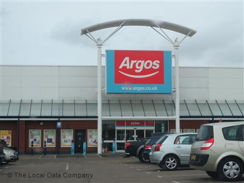
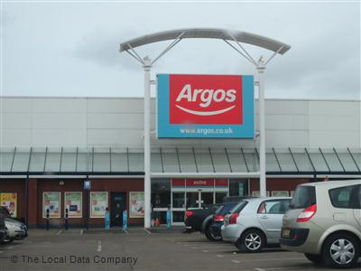
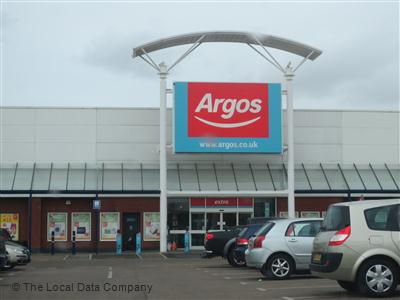

Liam Wheeler
 

Jump to:
Interest in technology and
coding
What
methods, skills and resources does a successful digital project require?
Planning and carrying out
tasks using IT
Some of the
risks that digital projects might face
Selecting and using IT
systems and software
How
my chosen technologies have helped me achieve my outcomes
Legal guidelines and
constraints that impact digital projects

Born Liam Francis Ellis Wheeler on the 19th of February 1994. I am the youngest of six children and went from St Peter and St johns primary school to St Ambrose Barlow RC high school then Loreto college until finally i graduated from Salford university with a first class honers degree in mathematics in 2015. I Worked at Argos, Salford Regents road, from 2012 till 2018 where i was the stockroom team leader. I started learning with Code Nation early March 2019.
I first heard about Code Nation from a friend of mine who is on the master course, he told me all about the courses available and the work he had been doing. This sounded great to me so i decided to find out more about it and I applied to joint the three week web development course to get a idea for myself about what it was like and see if i wanted to join the master course myself.
I've been interested in technology for as long as i can remember from using games consoles like the Gameboy as a child and wondering how it all worked, and this interest was increased by a friend of mine who did a masters degree in Computer Science (MComp), talking with him about his degree and the work he did always fascinated me and made coding something i wanted to learn especially when he showed me the native app he made called 'My Pocket Galaxy', available on iPhone and android.
IT has a plethora of uses in modern business;
Technology allows businesses and customers to communicate quickly and clearly, and websites can provide customers with information about a company after business hours. These things can create a stronger public image for busnesses.
Technology can make businesses more efficient by automising certain processes and allows things such as meetings over the internet instead of company headquarters.
Technology helps keep business secure, keeping financial and confidential data private through the use of secure sites and passwords.
Planning, is key to creating a successful digital project, its easy to become overwhelmed with a project at the start so careful planning and breaking large tasks down into simple manageable tasks is a great way to make a project more manageable.
Good communication is necessary for working on digital projects, good communication within a team keeps everybody on the same page and keeps everything moving forward quickly and efficiently.
Risk Assessments are required for a successful project, making sure any potential pitfalls are identified can prevent any nasty surprises midway through a project.
IT can be a great tool for planning tasks with websites like Trello where you can breakdown big tasks into smaller steps and keep track of what you need to do, what you are currently working on and completed jobs.
Connectivity/power issues are a major risk in digital projects, people being unable to access the work for various reasons like these could cause a major delay in progress.
Security issues are a risk with digital projects, competitors could steal your work if it is not properly secured.
Updates to operating systems when you are part way through a project could cause any work you currently have to no longer function properly.
Unexpected team member absences could cause delays to any projects being worked on.
To decide what types of systems and software to use for your IT project you first need to decide what you need your system to do, different technologies use different techniques and and achieve different goals so you need to be clear on what you want your system to do. You also need to look at your team, different people will have different backgrounds and skills, you need to choose your systems to compliment your individuals and their skills.
Trello helped me to achieve my outcomes by helping me to plan out my project and goals, it allowed me to break down my tasks into smaller more achievable steps so the project doesn't get overwhelming. It also allows tasks to be organised into; to do, doing and done. So it was easy to see exactly where i was with the work and what still needed to be done at all times.
GitHub is incredibly useful for collaborative work as it has a version control software so any changes to any work can be tracked for who may have made changes and when, it also allows the recovery of previous states of work. This means that should anything go wrong with any of the code, we can see who made changes and inquire with them as to what may have gone wrong and even recover the code from before these changes were made if necessary.
General Data Protection Regulation or GDPR has been implemented across Europe into privacy laws, and applies to all companies storing personal information about European citizens. This gives people more control over thier personal data and how it is stored. Personal data in these laws applies to any information related to a person, such as; their name, photos, email address and bank details etc. This has impacted a lot on companies such how sales and marketing teams operate, and lead to things such new forms and applications for customers to be compliant with things such as double opt-in rules and email marketing practices. this requires customers who sign up to fill out a form and then confirm thier actions via email.
Copyright stops other people using your work without their permission and pretending like its their own. Copyright protection is gained automatically when you create any original work such as, any written work or photography, software or web content, music or film recordings etc. you don't need to apply and there is no register of copyright works in the UK. In most countries copyright lasts a minimum of life plus fifty years for most types of work and prevents people copying your work, giving out copies of it (either free of for sale), making adations of your work or performing/showing your work in public.
Websites have to take into account the needs of all users to create an inclusive environment, people with sight issues for example, might require the website to have a larger text size or even a feature to read the text outloud to the user. People that are colour blind could require the site to not use particular colour combinations so that they can view everthing correctly, and people with dyslexia would need the use of particular fonts to make the content easier to read. These are just a few of the issues that are needed to be taken into account to create a fully inclusive website.
This Blog, is set up to show a little about myself and my background and my interests in technology, and then it addressess some of the uses of technology in business, how you chose the technology you are going to use and how some of those are useful and then some of the things that are needed to be aware of within a digital project, like data protection, and things to be kept in mind to make a website fully accessable. Then the website ends with a review section looking at the website and project as a whole.
The tools i used to create my website were mainly Visual Studio Code and Trello, I am happy with the use of these tools as Trello allowed me to plan out my website and keep track of all my tasks. Visual Studio Code was easy to use and let me link my information html to my css styling. These tools were appropriate as they allowed me to work quickly and efficiently to complete this project with minimal issues.
Overall I am happy with the outcome of my website as it fits the criteria set at the start of the project and matches the purpose and requirements of the project. I have used a variaty of techniques to create and stly my website in html and css. Looking back over the project with hindsight I would have layed out my wedsite a little differently, using the skills i have learned during this project, if i was to do it again I would have added multiple pages and changed how you navigate around the site. I would also change the website visually with a better colour scheme for a more pleasing aesthetic. I could also add these things when improving the website in the future.
To improve efficiency and productivity during this project i could have used Trello more efficiently and created a more detailed plan for my website at the start detailing how i wanted it to look and work as at the start i just detailed all the information i wanted the website to have without to much thought in how it was going to look and this meant i had to go back over and edit a lot of the work so i could style it more efficiently. The work could have also been done in teams, separating the tasks so each person could complete a part of the project and bring it together with GitHub and communicate with each other through the use of slack. To test digital solutions i would perform some peer testing by getting people to use my website to check it works correctly and give feedback on anything they think could be improved.
The appropriate filetypes for websites are html and css, html (Hypertext Markup Language) provides the structure for a page and allows you to create online documents with headings, text, tables and photos, etc. Create hyperlinks and include spreadsheets and video/sound clips. CSS (Cascading Style Sheets) is used to create the visual layout of the page, including colours and fonts and allows it to adapt how the page is presented to different types of devices for large/small screens etc. These file types are also used because they can be used on all browsers.